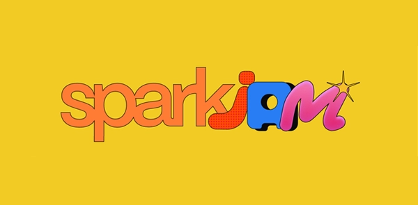
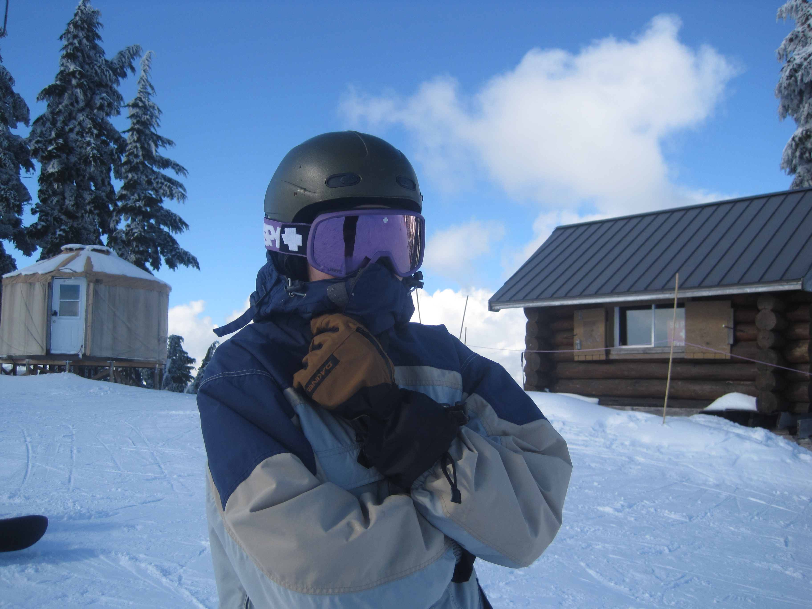
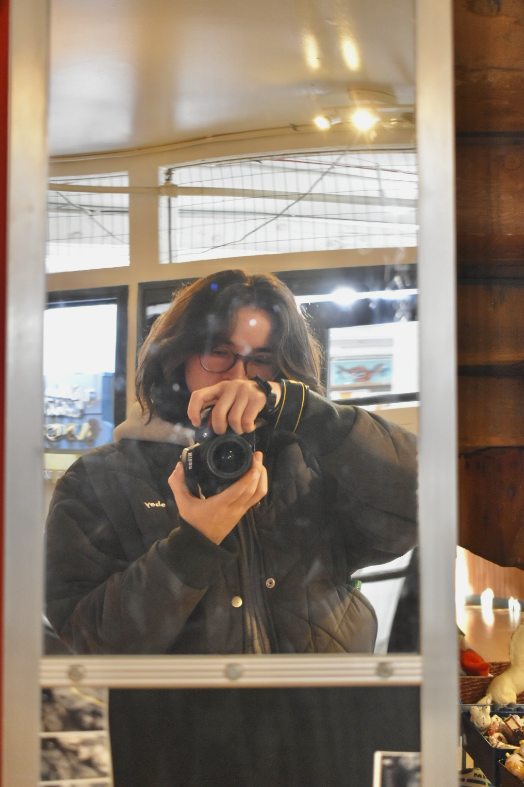

Hi I'm Olivia,
I'm a Vancouver-based design student whos pretty passionate about building & bringing ideas to life across multimedia. As a visual and user-centered designer, I want to tell stories through products that not only look pretty, but also prioritize the message being shared & ensure usability.
My goal is always to craft experiences that are beautiful & purposeful [ or at least super freaking cool ].
Education
Interactive Arts & Tech. Student @ Simon Fraser University SEPT 2024 - MAY 2029 [ EXPECTED ]
Experience

Design Intern @ TEALEAVES APR 2026 - AUG 2026
Visual Designer for the SFU WiCS X WiE Networking Night Committee SEPT 2026 - PRESENT
UI/UX Designer @ FLUI Design Jam JUL 2026 - PRESENT
Motion/Video Designer @ SFU Blueprint JAN 2026 - PRESENT
Graphic Designer @ SFU UPhoto JAN 2026 - PRESENT

Commission Illustrator @ SFU The PEAK SEPT 2025 - PRESENT
Recognition

Best Community Centred Project [ Scrapbooks ] @ SparkJam 2026
Contributor Award [ Illustration ] @ SFU The PEAK 2026
Dean's Honour Roll @ Simon Fraser University 2025 - 2026
[ that's me ^ ]
[ & me again... ]


[ part-time hiker ]
[ & snowboarder ]


[ motorcycle enthusiast ]
[ & photo-taker ]